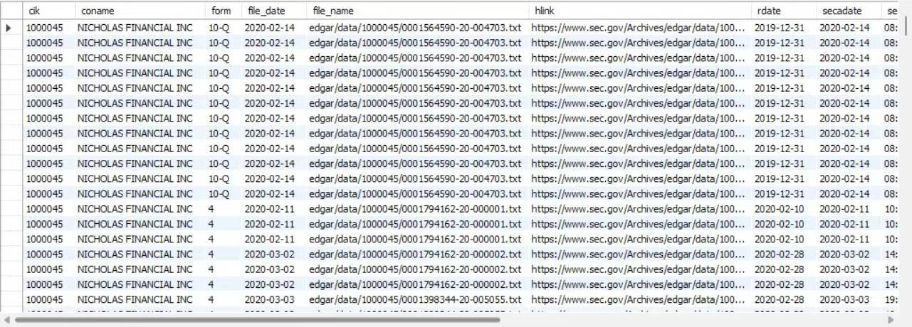

SEC-Index
This is a demonstration of data scraped from the SEC-Index Project. The aim is to create an SEC index database that enhances researchers' ability to utilize SEC files efficiently and quickly, while also allowing a high level of customization based on individual needs. Please note that all these data are derived from a primary algorithm, which may not be optimal.
If you are not familiar with Github, simply click the download button to view the demo

Project Details / Background
The SEC-Index project is a comprehensive endeavor that aims to create an efficient and user-friendly database of SEC files. The project was developed using Python for backend data processing and JavaScript for frontend interactivity. The primary goal was to provide researchers with a tool that allows easy and fast access to SEC files, while also offering a high level of customization based on individual needs.
The project began with data scraping from the SEC-Index Project. This was achieved using Python's powerful libraries such as BeautifulSoup and requests. The scraped data was then processed and structured into a usable format. This involved creating a primary algorithm that, while not optimal, was effective in extracting and organizing the necessary data.
The processed data was then used to populate the SEC-Index database. This database serves as the backbone of the project, storing all the relevant SEC files and their associated metadata. The database was designed to be easily searchable and customizable, allowing users to quickly find the files they need and tailor their search parameters to their specific requirements.
On the frontend, JavaScript was used to create an interactive and intuitive user interface. This interface allows users to easily navigate the database, perform searches, and customize their experience. The frontend was designed with a focus on usability, ensuring that even users with little technical knowledge can effectively use the tool.
In summary, the SEC-Index project is a robust tool that simplifies the process of accessing and using SEC files. It combines efficient data processing with an intuitive user interface, resulting in a tool that is both powerful and easy to use.
The project began with data scraping from the SEC-Index Project. This was achieved using Python's powerful libraries such as BeautifulSoup and requests. The scraped data was then processed and structured into a usable format. This involved creating a primary algorithm that, while not optimal, was effective in extracting and organizing the necessary data.
The processed data was then used to populate the SEC-Index database. This database serves as the backbone of the project, storing all the relevant SEC files and their associated metadata. The database was designed to be easily searchable and customizable, allowing users to quickly find the files they need and tailor their search parameters to their specific requirements.
On the frontend, JavaScript was used to create an interactive and intuitive user interface. This interface allows users to easily navigate the database, perform searches, and customize their experience. The frontend was designed with a focus on usability, ensuring that even users with little technical knowledge can effectively use the tool.
In summary, the SEC-Index project is a robust tool that simplifies the process of accessing and using SEC files. It combines efficient data processing with an intuitive user interface, resulting in a tool that is both powerful and easy to use.